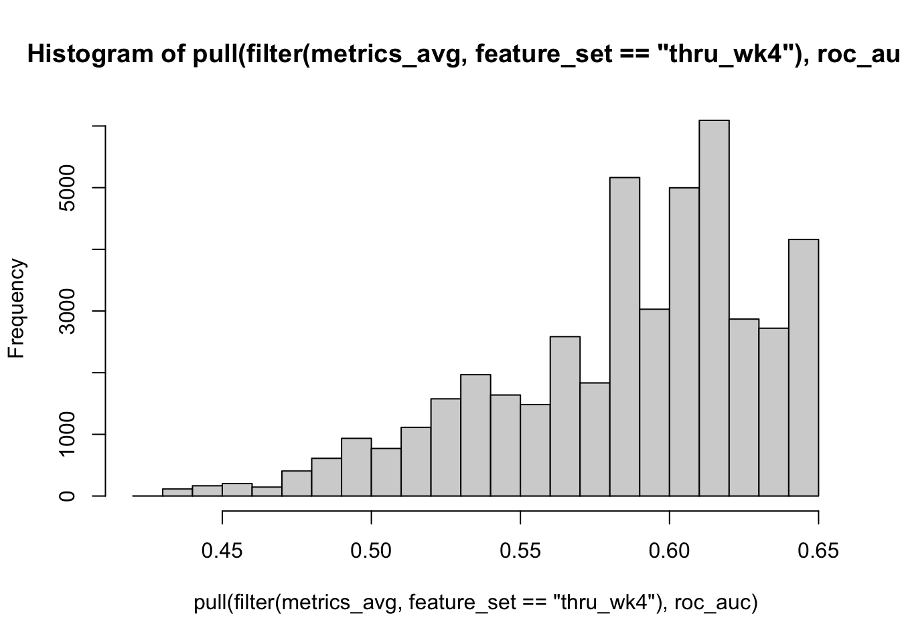

library(tidyverse)
library(tidymodels)Analysis Workflow Step 2: Inner Loop Model Selection
Setup
Load libraries
Source functions file
source("fun_moodivate.R")This functions file (fun_moodivate.R) contains many functions that are used throughout the Moodivate project analysis scripts. Functions split data, fit and evaluate models, and provide helper functionality for the modeling process. See all annotated code building functions within fun_moodivate.R.
Read in data
Read in results file (“results.csv”) created in 01_fit_inner.qmd. This file contains one row per model configuration (unique combination of model tuning parameters) for each held-out fold. Each row contains the model configuration information (outer split number, inner split number, hp1 [alpha/mixture], and hp2 [lambda/penalty]). Each row also contains performance metrics for the model fit in the held-in data and evaluated in the indicated validation set (held-out fold from inner loop).
results <- read_csv("results.csv", show_col_types = FALSE) |>
glimpse()Rows: 330,000
Columns: 12
$ config_num <dbl> 1, 1, 1, 1, 1, 1, 1, 1, 1, 1, 1, 1, 1, 1, 1, 1, 1, 1, …
$ outer_split_num <dbl> 1, 1, 1, 1, 1, 1, 1, 1, 1, 1, 1, 1, 1, 1, 1, 1, 1, 1, …
$ inner_split_num <dbl> 1, 1, 1, 1, 1, 1, 1, 1, 1, 1, 1, 1, 1, 1, 1, 1, 1, 1, …
$ hp1 <dbl> 0, 0, 0, 0, 0, 0, 0, 0, 0, 0, 0, 0, 0, 0, 0, 0, 0, 0, …
$ hp2 <dbl> 0.0003354626, 0.0003711182, 0.0004105636, 0.0004542015…
$ accuracy <dbl> 0.516129, 0.516129, 0.516129, 0.516129, 0.516129, 0.51…
$ sens <dbl> 0.5333333, 0.5333333, 0.5333333, 0.5333333, 0.5333333,…
$ spec <dbl> 0.5, 0.5, 0.5, 0.5, 0.5, 0.5, 0.5, 0.5, 0.5, 0.5, 0.5,…
$ ppv <dbl> 0.5, 0.5, 0.5, 0.5, 0.5, 0.5, 0.5, 0.5, 0.5, 0.5, 0.5,…
$ npv <dbl> 0.5333333, 0.5333333, 0.5333333, 0.5333333, 0.5333333,…
$ roc_auc <dbl> 0.5333333, 0.5333333, 0.5333333, 0.5333333, 0.5333333,…
$ new_config_num <dbl> 1, 2, 3, 4, 5, 6, 7, 8, 9, 10, 11, 12, 13, 14, 15, 16,…Process metrics
Check for duplicates
nrow(results)[1] 330000results <- results |>
distinct(outer_split_num, inner_split_num, hp1, hp2,
.keep_all = TRUE)
nrow(results)[1] 330000No duplicates
Checks that breakdowns are as expected. Should be equal numbers of each value.
results |> janitor::tabyl(outer_split_num) outer_split_num n percent
1 11000 0.03333333
2 11000 0.03333333
3 11000 0.03333333
4 11000 0.03333333
5 11000 0.03333333
6 11000 0.03333333
7 11000 0.03333333
8 11000 0.03333333
9 11000 0.03333333
10 11000 0.03333333
11 11000 0.03333333
12 11000 0.03333333
13 11000 0.03333333
14 11000 0.03333333
15 11000 0.03333333
16 11000 0.03333333
17 11000 0.03333333
18 11000 0.03333333
19 11000 0.03333333
20 11000 0.03333333
21 11000 0.03333333
22 11000 0.03333333
23 11000 0.03333333
24 11000 0.03333333
25 11000 0.03333333
26 11000 0.03333333
27 11000 0.03333333
28 11000 0.03333333
29 11000 0.03333333
30 11000 0.03333333results |> janitor::tabyl(inner_split_num) inner_split_num n percent
1 33000 0.1
2 33000 0.1
3 33000 0.1
4 33000 0.1
5 33000 0.1
6 33000 0.1
7 33000 0.1
8 33000 0.1
9 33000 0.1
10 33000 0.1results |> janitor::tabyl(hp1) hp1 n percent
0.0 30000 0.09090909
0.1 30000 0.09090909
0.2 30000 0.09090909
0.3 30000 0.09090909
0.4 30000 0.09090909
0.5 30000 0.09090909
0.6 30000 0.09090909
0.7 30000 0.09090909
0.8 30000 0.09090909
0.9 30000 0.09090909
1.0 30000 0.09090909results |> janitor::tabyl(hp2) hp2 n percent
0.0003354626 3300 0.01
0.0003711182 3300 0.01
0.0004105636 3300 0.01
0.0004542015 3300 0.01
0.0005024775 3300 0.01
0.0005558848 3300 0.01
0.0006149686 3300 0.01
0.0006803322 3300 0.01
0.0007526433 3300 0.01
0.0008326401 3300 0.01
0.0009211396 3300 0.01
0.0010190455 3300 0.01
0.0011273576 3300 0.01
0.0012471820 3300 0.01
0.0013797422 3300 0.01
0.0015263920 3300 0.01
0.0016886289 3300 0.01
0.0018681096 3300 0.01
0.0020666669 3300 0.01
0.0022863284 3300 0.01
0.0025293372 3300 0.01
0.0027981749 3300 0.01
0.0030955869 3300 0.01
0.0034246100 3300 0.01
0.0037886043 3300 0.01
0.0041912868 3300 0.01
0.0046367695 3300 0.01
0.0051296017 3300 0.01
0.0056748158 3300 0.01
0.0062779796 3300 0.01
0.0069452523 3300 0.01
0.0076834480 3300 0.01
0.0085001050 3300 0.01
0.0094035626 3300 0.01
0.0104030467 3300 0.01
0.0115087638 3300 0.01
0.0127320052 3300 0.01
0.0140852622 3300 0.01
0.0155823540 3300 0.01
0.0172385683 3300 0.01
0.0190708181 3300 0.01
0.0210978137 3300 0.01
0.0233402543 3300 0.01
0.0258210389 3300 0.01
0.0285655008 3300 0.01
0.0316016655 3300 0.01
0.0349605375 3300 0.01
0.0386764167 3300 0.01
0.0427872486 3300 0.01
0.0473350118 3300 0.01
0.0523661468 3300 0.01
0.0579320302 3300 0.01
0.0640894992 3300 0.01
0.0709014321 3300 0.01
0.0784373905 3300 0.01
0.0867743295 3300 0.01
0.0959973835 3300 0.01
0.1062007357 3300 0.01
0.1174885800 3300 0.01
0.1299761846 3300 0.01
0.1437910695 3300 0.01
0.1590743083 3300 0.01
0.1759819691 3300 0.01
0.1946867083 3300 0.01
0.2153795334 3300 0.01
0.2382717537 3300 0.01
0.2635971381 3300 0.01
0.2916143023 3300 0.01
0.3226093497 3300 0.01
0.3568987930 3300 0.01
0.3948327864 3300 0.01
0.4367987011 3300 0.01
0.4832250812 3300 0.01
0.5345860199 3300 0.01
0.5914060006 3300 0.01
0.6542652529 3300 0.01
0.7238056780 3300 0.01
0.8007374029 3300 0.01
0.8858460329 3300 0.01
0.9800006734 3300 0.01
1.0841628049 3300 0.01
1.1993961020 3300 0.01
1.3268772946 3300 0.01
1.4679081848 3300 0.01
1.6239289404 3300 0.01
1.7965328013 3300 0.01
1.9874823497 3300 0.01
2.1987275087 3300 0.01
2.4324254543 3300 0.01
2.6909626442 3300 0.01
2.9769791875 3300 0.01
3.2933958046 3300 0.01
3.6434436530 3300 0.01
4.0306973228 3300 0.01
4.4591113395 3300 0.01
4.9330605466 3300 0.01
5.4573847799 3300 0.01
6.0374382910 3300 0.01
6.6791444232 3300 0.01
7.3890560989 3300 0.01Median metrics across inner folds for model configurations
This process groups by outer_split_number, hp1, and hp2 such that each group contains the 10 inner held-out folds per unique combination of outer split number and tuning parameters. The summarize() function then averages model performance metrics across the 10 held-out folds (i.e., validation sets). Validation set performance will be used for model selection in script 03_fit_eval_outer.qmd.
metrics_avg <- results |>
group_by(outer_split_num, hp1, hp2) |>
summarize(across(c(accuracy, roc_auc,
sens, spec, ppv, npv),
median),
n_jobs = n(), .groups = "drop") |>
relocate(n_jobs) |>
arrange(desc(roc_auc)) |>
ungroup()Review
unique(metrics_avg$n_jobs)[1] 10The n_jobs variable should always be 10 jobs (10 inner held-out folds per combination of outer split number and tuning parameters).
metrics_avg |>
slice(1:50) |>
print()# A tibble: 50 × 10
n_jobs outer_split_num hp1 hp2 accuracy roc_auc sens spec ppv npv
<int> <dbl> <dbl> <dbl> <dbl> <dbl> <dbl> <dbl> <dbl> <dbl>
1 10 10 0.1 0.437 0.532 0.627 0.267 0.75 0.523 0.532
2 10 10 0.1 0.395 0.525 0.621 0.3 0.75 0.528 0.524
3 10 10 0.1 0.357 0.548 0.619 0.3 0.75 0.563 0.548
4 10 10 0.2 0.176 0.548 0.619 0.3 0.719 0.577 0.546
5 10 12 0.8 0.0579 0.532 0.617 0.367 0.688 0.523 0.537
6 10 12 0.9 0.0473 0.565 0.617 0.367 0.719 0.569 0.558
7 10 10 0.2 0.159 0.548 0.615 0.3 0.719 0.558 0.546
8 10 12 0.8 0.0524 0.565 0.615 0.367 0.719 0.569 0.558
9 10 12 1 0.0428 0.565 0.615 0.367 0.719 0.569 0.558
10 10 12 0.1 0.264 0.565 0.615 0.4 0.719 0.569 0.558
11 10 12 0.3 0.159 0.581 0.615 0.4 0.75 0.6 0.571
12 10 12 0.5 0.0868 0.565 0.615 0.367 0.719 0.569 0.558
13 10 12 0.6 0.0709 0.565 0.615 0.367 0.719 0.569 0.558
14 10 12 0.7 0.0641 0.565 0.615 0.367 0.719 0.569 0.558
15 10 12 0.9 0.0524 0.548 0.615 0.367 0.719 0.55 0.548
16 10 12 1 0.0473 0.548 0.615 0.367 0.719 0.55 0.548
17 10 11 0.1 0.238 0.548 0.614 0.367 0.710 0.591 0.543
18 10 10 0.1 0.323 0.548 0.612 0.3 0.75 0.563 0.548
19 10 12 0.2 0.159 0.581 0.612 0.4 0.75 0.612 0.568
20 10 12 0.6 0.0784 0.548 0.612 0.4 0.719 0.55 0.548
21 10 12 0.7 0.0579 0.565 0.612 0.4 0.719 0.569 0.561
22 10 11 0.1 0.215 0.548 0.612 0.367 0.677 0.564 0.543
23 10 10 0.1 0.292 0.548 0.610 0.3 0.719 0.558 0.553
24 10 12 0.1 0.292 0.581 0.610 0.4 0.719 0.604 0.572
25 10 12 0.1 0.437 0.541 0.610 0.367 0.75 0.563 0.535
26 10 12 0.2 0.106 0.581 0.610 0.4 0.719 0.608 0.568
27 10 12 0.2 0.144 0.565 0.610 0.4 0.719 0.569 0.558
28 10 12 0.2 0.215 0.574 0.610 0.4 0.75 0.6 0.558
29 10 12 0.2 0.238 0.541 0.610 0.4 0.719 0.563 0.536
30 10 12 0.3 0.130 0.565 0.610 0.4 0.719 0.569 0.561
31 10 12 0.4 0.0960 0.565 0.610 0.4 0.719 0.569 0.561
32 10 12 0.4 0.106 0.565 0.610 0.367 0.719 0.569 0.558
33 10 12 0.4 0.117 0.581 0.610 0.4 0.75 0.6 0.571
34 10 11 0.1 0.357 0.525 0.610 0.267 0.710 0.528 0.524
35 10 11 0.1 0.176 0.558 0.609 0.367 0.677 0.564 0.551
36 10 11 0.1 0.195 0.558 0.609 0.367 0.677 0.564 0.551
37 10 10 0.2 0.144 0.548 0.608 0.333 0.719 0.558 0.546
38 10 12 0.1 0.357 0.565 0.608 0.4 0.75 0.577 0.562
39 10 12 0.2 0.0960 0.581 0.608 0.4 0.719 0.608 0.568
40 10 12 0.2 0.130 0.565 0.608 0.4 0.719 0.569 0.558
41 10 12 0.3 0.0784 0.581 0.608 0.4 0.719 0.6 0.565
42 10 12 0.3 0.117 0.565 0.608 0.4 0.719 0.569 0.561
43 10 12 0.5 0.0784 0.565 0.608 0.4 0.719 0.569 0.561
44 10 12 0.6 0.0473 0.581 0.608 0.4 0.719 0.577 0.568
45 10 12 0.6 0.0641 0.548 0.608 0.4 0.688 0.551 0.55
46 10 12 0.6 0.0868 0.558 0.608 0.367 0.75 0.578 0.545
47 10 12 0.4 0.130 0.558 0.608 0.367 0.719 0.569 0.545
48 10 11 0.1 0.395 0.525 0.607 0.267 0.744 0.535 0.523
49 10 10 0.2 0.195 0.548 0.607 0.3 0.75 0.563 0.544
50 10 10 0.3 0.106 0.565 0.607 0.333 0.719 0.583 0.560metrics_avg |>
pull(roc_auc) |>
hist()Save average metrics file
metrics_avg |>
arrange(outer_split_num, hp1, hp2) |>
readr::write_csv("metrics_inner_avg.csv")Plot tuning parameters
This plot shows performance as a function of alpha/mixture (hp1) and lambda/penalty (hp2). With shuffled data, there is no real pattern of performance as a function of tuning parameters, creating odd-looking output.
With real data, we will confirm that the plot captures a peak (i.e., local maximum) in performance (auROC) before continuing to outer loop model fitting and evaluation. If performance is increasing toward one end of the range for either tuning parameter, we will NOT yet proceed to fitting and evaluating models in the outer loop (in 03_fit_eval_outer.qmd). First, we will add model configurations that expand the range, run those additional configurations in the inner loop, and re-evaluate model performance as a function of tuning parameters.
plot_hp <- metrics_avg |>
mutate(hp1 = factor(hp1, ordered = TRUE)) |>
ggplot(mapping = aes(x = log(hp2),
y = roc_auc,
group = hp1,
color = hp1)) +
geom_line() +
scale_color_discrete(name = "mixture (alpha)") +
labs(title = "Plotting performance by glmnet hyperparameters",
x = "penalty (lambda)",
y = "auROC")
plot_hp